Before you start
Your mailing list belongs to you, the same as your website. The account is in your name, and your subscribers are yours to keep, wherever you take them. I never hold the login.
You'll need
- An email address on your own domain, such as hello@yourauthorname.com. MailerLite won't send newsletters from Gmail, Hotmail or similar addresses. Don't have one yet? It's usually free; see just below.
- About 45 minutes.
- A place to paste a few pieces of information to send me, such as a blank email.
How this guide is written
Each step names the menu, tab or button to use, exactly as MailerLite labels it, rather than describing where it sits on the screen. If you use a screen reader, search the page for that name. MailerLite updates its layout from time to time. If a name doesn't match, look for the closest wording, or stop and ask me.
Getting an address on your domain
You don't need a new inbox. The company you bought your web address from, your registrar, can usually forward an address such as hello@ to the inbox you already use, free of charge. MailerLite's emails, and any replies from your readers, will then arrive where you already read your mail.
- Sign in to your registrar's account and open your domain.
- Look for Email forwarding, Mail forwarding or Forwarders. It may be listed under Email.
- Create a new forwarding address. In the address box type hello. As the destination, enter the email address you use every day. Save.
- From any other email account, send a short test to your new address, and check that it arrives in your usual inbox.
Happy to do this one together, on a call or by text. Every registrar arranges its screens a little differently.
Forwarding only receives mail, so you can't write everyday emails from this address. MailerLite does all the sending for your newsletters, so that doesn't matter here. If you ever want to send ordinary emails from it too, your domain company can add a small mailbox for a modest monthly fee, and nothing else needs to change.
You don't have to do this alone. If any step is unclear, call or text me, or we can go through it together on a video call or over Messenger.
Never send me your password. Nothing in this guide needs it. Everything I ask for at the end is safe to share by email.
Create your account
- Go to mailerlite.com and choose Sign up. The free plan is all you need.
- Sign up using your own-domain email address from Step 01.
- MailerLite emails you a link to confirm your address. Open that email and follow the link.
- Log in. MailerLite asks a few short questions about you. Answer them as below, choosing Continue after each.
The setup questions
- How many email subscribers do you have? If you're starting out, choose Less than 500. For Which marketing tool are you moving from? choose I'm starting fresh, unless you already use another newsletter service.
- What industry is your business in? Choose Author from the list. You can start typing it to find it quickly.
- Your business website says optional, but fill it in. It helps when MailerLite reviews your account. If your site isn't live yet, enter the address anyway.
- Your address. This is required by law and appears at the foot of every newsletter. It doesn't have to be your home; see Step 08.
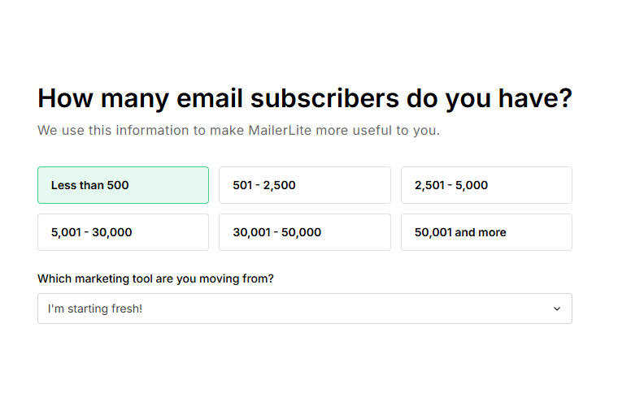
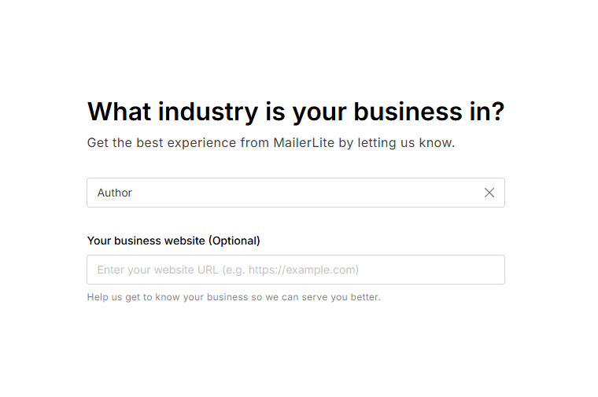
- What do you want to start with? Choose Get more subscribers. That matches what we're building: a signup form on your website.
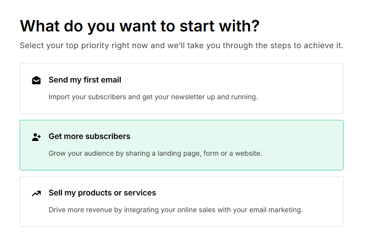
Your dashboard
You'll land on your Dashboard, with a menu down the left side. This guide uses that menu to get around. Two things you'll notice:
- A "Let's get you started" checklist. You can ignore it, or choose Dismiss checklist and confirm when asked. This guide covers everything you need, in a better order.
- "Trial · 14 days left" and an Upgrade button. New accounts get a free two-week taste of the paid features, then move to the free plan on their own. Nothing is charged and nothing breaks. You don't need to upgrade, so ignore the Upgrade button.
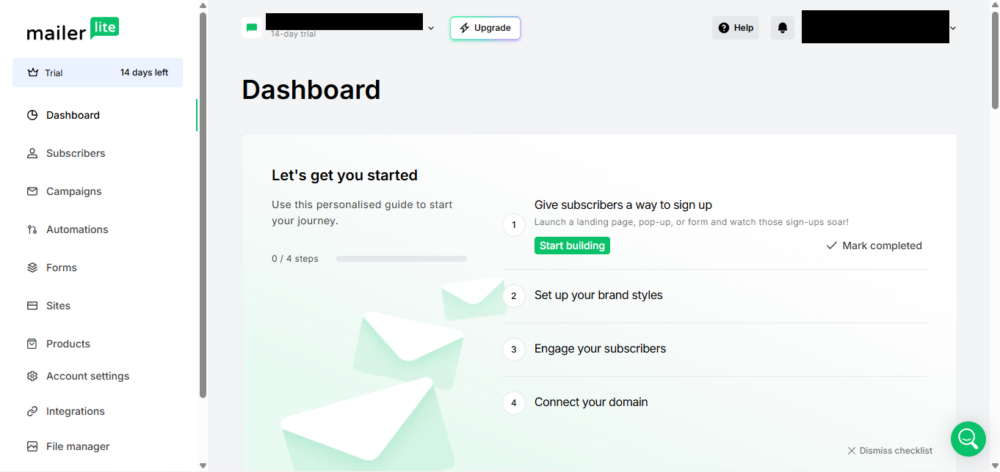
Getting approved (later)
MailerLite reviews every account before it can send newsletters. This is how they keep spammers out, which is part of why their emails reach inboxes reliably.
The review doesn't happen during setup. It usually comes up the first time you go to send a newsletter, so there's nothing to do now. When it appears, answer plainly:
- What you'll send: news about your books, new releases and events.
- Where your subscribers come from: readers who sign up on your website. Say so directly.
- Your website: your web address. If the site isn't finished yet, say it's launching soon.
Never say you'll be importing a list of people who didn't sign up, such as contacts from your phone or a bought list. That alone can get an account refused, and the decision is usually final.
Approval can take anywhere from minutes to a few days. If you're declined, tell me before contacting MailerLite.
Connect your email address
This step tells email providers that MailerLite is allowed to send on your behalf. Without it, your newsletters are likely to land in spam. It's called domain authentication.
Most of the time MailerLite can do this for you. It signs in to your registrar, the company you bought your web address from, and adds the records itself. Your part is a few clicks and one sign-in.
- In the left menu, choose Account settings. It opens its own menu. Choose Domains.
- Under Sending domains, choose Add domain.
- Enter your own-domain email address and choose Save. MailerLite sends a confirmation email to it. If your address forwards to your usual inbox, look for it there. Open it and confirm.
- Back on Domains, choose Authenticate next to your domain.
- If MailerLite offers Continue to set it up automatically, choose it. A new tab opens at your registrar. Sign in there and approve the change.
- Return to the MailerLite tab. When your domain shows a green Authenticated badge, this step is done.
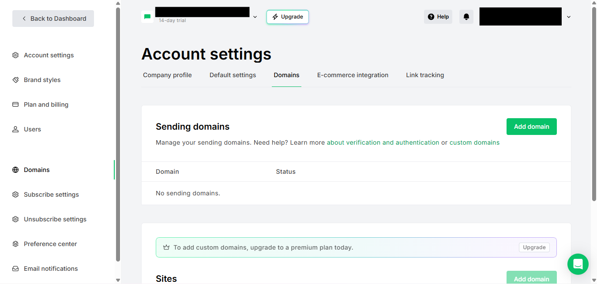
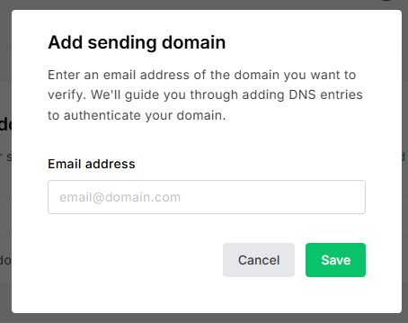
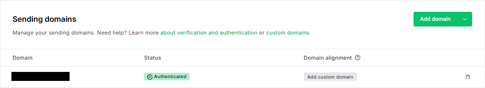
Ignore "Add custom domain", and any banner about custom domains or Sites. Those are paid features for a different job. Your newsletter doesn't need them.
If there's no Continue button
Not every registrar is supported. Choose Or manually authenticate your domain instead. You'll see two or three records, each with a Type (TXT or CNAME), a Name (sometimes called Host) and a Value. Copy every one of them exactly as shown and paste them into an email to me. Leave the MailerLite page alone; we'll add the records at your registrar together, then come back and choose Check DNS records.
Manual records must match character for character, so copy rather than retype. They aren't secret; they only prove the connection. Once they're added, it can take up to a day or two for MailerLite to recognise them.
Create your mailing list
MailerLite calls a mailing list a group. You need one, so that everyone who signs up on your website lands in the same place.
- In the left menu, choose Subscribers, then the Groups tab.
- Choose Create group.
- Name it Newsletter and save.
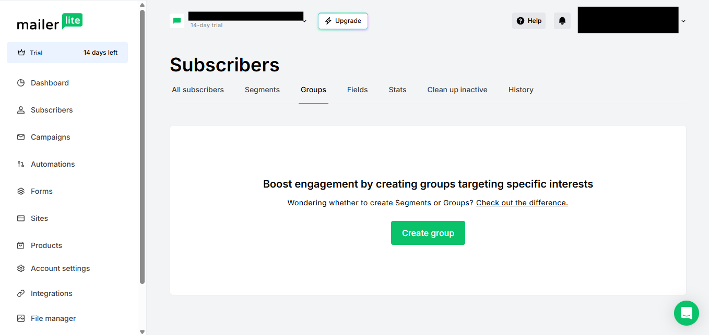
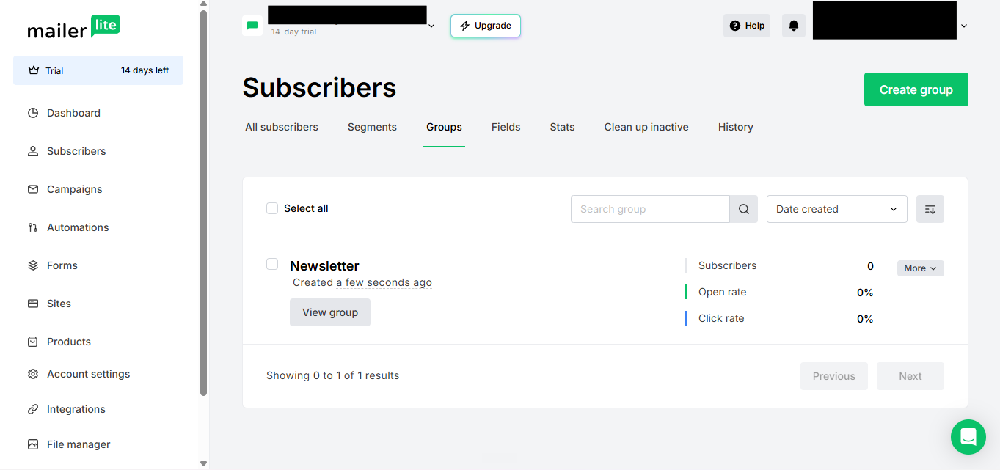
Make your signup form
This is the form that sits on a page of your website, where readers type their email address to join.
- In the left menu, choose Forms, then the Embedded forms tab. Choose Create.
- Under Form name, type Website signup. Under Type, choose Embedded form. Choose Save and continue.
- On the next screen, Select subscriber groups, tick Newsletter and choose Continue.
- The form editor opens. Click the heading ("Newsletter") and the line under it, and change them to your own words, such as "Join my readers' list" and one line about what they'll get. The look can stay as it is; I'll match it to your site. Leave the Settings tab alone.
- Choose Done editing. You'll land on your form's Overview page.
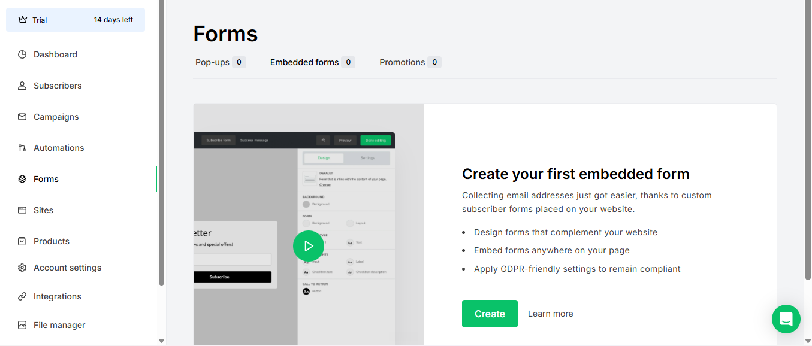
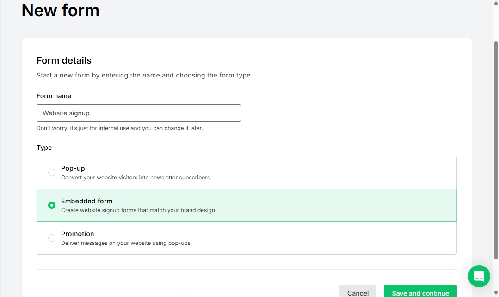
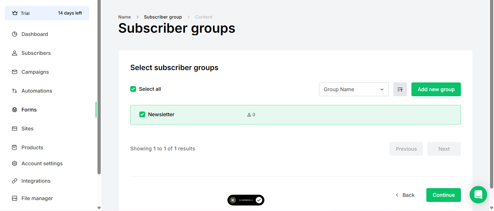
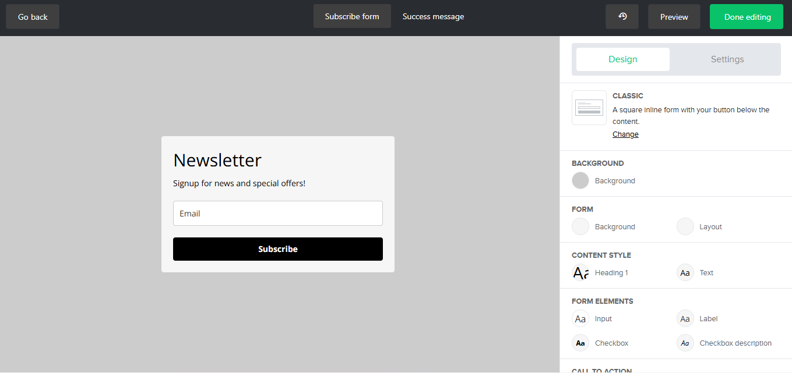
Copy the code for me
- On the Overview page, scroll to the bottom. The box you need is called Embed form into your website.
- Leave it on the JavaScript snippet tab. You'll see two boxes of code, each with a Copy button.
- Copy both, one at a time, and paste them into your email to me, labelled "embedded form".
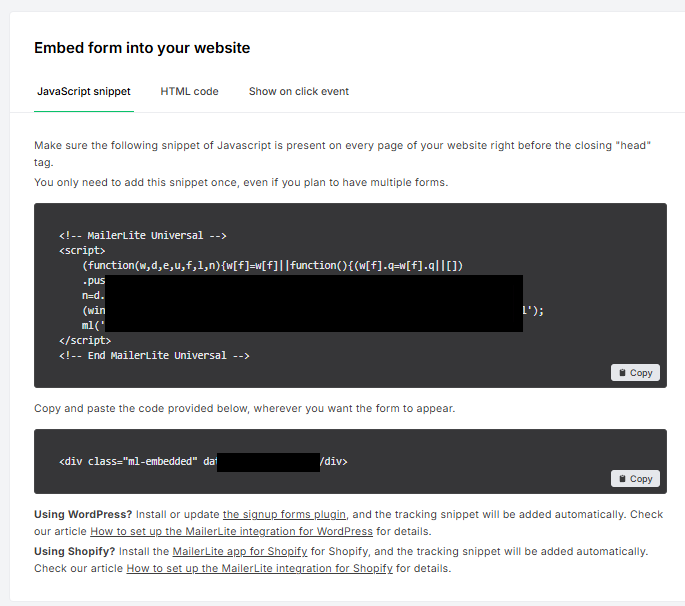
Ignore the notes about WordPress and Shopify under the code. They're for other kinds of website.
Pop-up form (optional)
A pop-up appears over the page instead of sitting within it. Your signup form already does the main job, so a pop-up is an extra, not a must.
If we've agreed your site will have one, we'll set it up together on a call. It takes about ten minutes, and choosing a design is easier side by side, especially if you'd like your book cover on it. Nothing to do on your own here.
Two things to check
Double opt-in: on
With double opt-in, a new subscriber gets an email asking them to confirm before they join. It keeps out mistyped addresses and fake signups, and it's your proof that every reader asked to hear from you. That matters under data-protection rules such as the UK's and EU's GDPR.
MailerLite usually switches it on for you. To check, open Forms, then Embedded forms, then your Website signup form. On its Overview page, the Double opt-in switch should be green. If it isn't, switch it on.
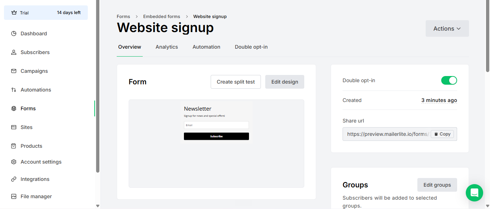
You may also find a Double opt-in for API and integrations switch under Account settings, Subscribe settings. That one is for other connections, not your website form, so leave it as it is.
Your postal address
The law requires every newsletter to include a postal address in its footer. You entered one when you signed up. To check or change it, open Account settings, then Company profile.
- It doesn't have to be your home. A PO box, a virtual mailbox or a business address all work.
What to send me
One email with everything below is perfect. Paste the code as plain text. If anything is missing or doesn't look right, send what you have and we'll sort out the rest together.
Checklist
- Whether your domain shows Authenticated (Step 04). If you used the manual route instead, the records: Type, Name and Value for each
- The embedded form code from Step 06: both pieces
- Confirmation that double opt-in is on and your postal address is set
- Whether you'd like a pop-up, so we can book ten minutes for it
Not on the list: your password, or anything called an "API key" or "token". I don't need either, and you should never send them by email to anyone.
Once I have these, I'll connect the form to your site and let you know when to do a test signup. A separate guide covers writing and sending your newsletters.